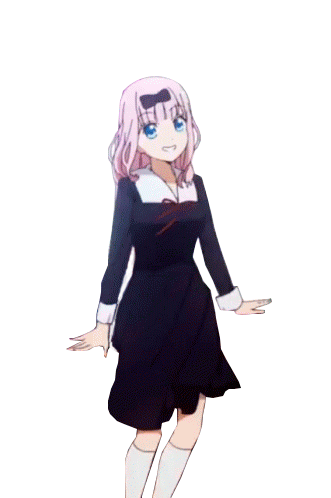
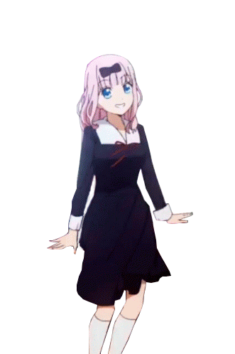
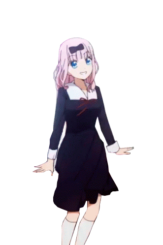

Go Back to HomePage
Animexy
Attack On Titan
Several hundred years ago, humans were nearly exterminated by giants.
Giants are typically several stories tall, seem to have no intelligence,
devour human beings and, worst of all, seem to do it for the pleasure rather
than as a food source. A small percentage of humanity survived by walling themselves
in a city protected by extremely high walls, even taller than the biggest of giants.
Flash forward to the present and the city has not seen a giant in over 100 years.
Teenage boy Eren and his foster sister Mikasa witness something horrific as the city
walls are destroyed by a super giant that appears out of thin air. As the smaller
giants flood the city, the two kids watch in horror as their mother is eaten alive.
Eren vows that he will murder every single giant and take revenge for all of mankind.
Writer: Hajime Isayama
Country of origin: Japan
Language: English sub
Table of Content
Plot
Episodes
Season 1
Season 2
Season 3
The Final Season
Voice Cast
Japanese Voice Cast
English Voice Cast
References
Navigation
 
Go Back to HomePage

Go Back to HomePage